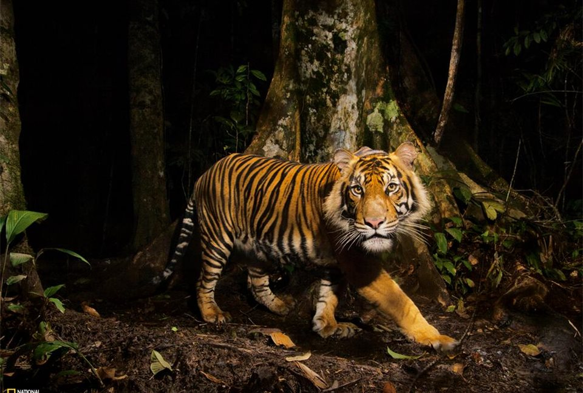

Los leones son los únicos felinos que viven en manada. Las unidades familiares pueden incluir hasta tres machos, una docena de hembras y sus crías. Todas las leonas de una manada están emparentadas y usualmente los pequeñas hembras en su seno se quedan con el grupo a medida que envejecen. Los varones jóvenes sin embargo tarde o temprano abandonan el grupo o son expulsados y establecen su propia manada.
Una abundante y frondosa melena rodea su cara y se extiende por el cuello del rey de la selva –solo los machos la poseen: este es su rasgo más característico y único en la familia de los félidos. Habitan en las sabanas africanas y en una zona reducida del noreste de la India, pero son una especie muy vulnerable pues antiguamente habitaban en otras partes del mundo de las que han ido desapareciendo.
Las leonas son las encargadas de salir a cazar mientras que los machos deben defender el territorio de la manada y a sus hembras. Suelen comer grandes mamíferos como ñus, cebras, búfalos o facóceros entre otros, y pueden llegar a vivir aproximadamente unos 15 años.
Estos animales han sido venerados a lo largo de la historia por su valor y su fuerza. Una vez pudieron encontrarse en la mayor parte de África y algunas partes de Asia y Europa. Hoy en día sólo se encuentran en ciertos lugares al sur del desierto del Sáhara, a excepción de una población muy pequeña de leones asiáticos que sobrevive en el bosque Gir de la India. Pulsa aquí para saber más sobre leones
El tigre (Panthera tigris) es una de las cuatro especies de la subfamilia de los panterinos (familia Felidae) pertenecientes al género Panthera. Se encuentra solamente en el continente asiático; es un predadorcarnívoro y es la especie de félido más grande del mundo junto con el leónpudiendo alcanzar ambos un tamaño comparable al de los fósiles de félidos de mayor tamaño.
Existen seis subespecies de tigre, de las cuales la de Bengala es la más numerosa; sus ejemplares constituyen cerca del 80 % de la población total de la especie; se encuentra en la India, Bangladés, Bután, Birmania y Nepal. Es una especie en peligro de extinción, y en la actualidad, la mayor parte de los tigres en el mundo viven en cautiverio. El tigre es el animal nacional de Bangladesh y la India.
Es un animal solitario y territorial que generalmente suele habitar bosquesdensos, pero también áreas abiertas, como sabanas. Normalmente, el tigre caza animales de tamaño medio o grande, generalmente ungulados. En las seis diferentes subespecies existentes del tigre, hay una variación muy significativa del tamaño. Los tigres machos tienen un tamaño mucho mayor que el de las hembras. Análogamente, el territorio de un macho cubre generalmente un área mayor que el de una hembra.
